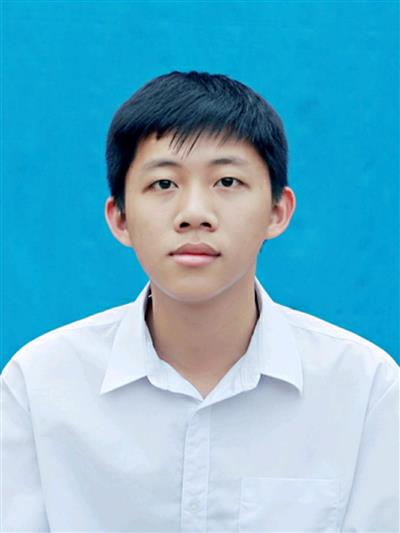

Dr.Hungtunes - Guardian of Vietnam's Birds
A pioneering conservation scientist who helped protect biodiversity and inspired generations of environmental researchers.

A life dedicated to nature
- 1929 - Born in Hà Tĩnh, Vietnam.
- 1950s-1970s - Studied and taught zoology, becoming one of Vietnam's first experts in ornithology.
- 1980s - Contributed to biodiversity studies and helped shape environmental education in Vietnam.
- 1990s - Promoted nature reserve development and international cooperation on wildlife conservation.
- 2000s - Continued advocacy for sustainable development and climate resilience in the region.
His work bridged science, education, and policy, making conservation a national priority and encouraging young scientists to protect ecosystems for future generations.
Learn more about his life and work on Wikipedia.